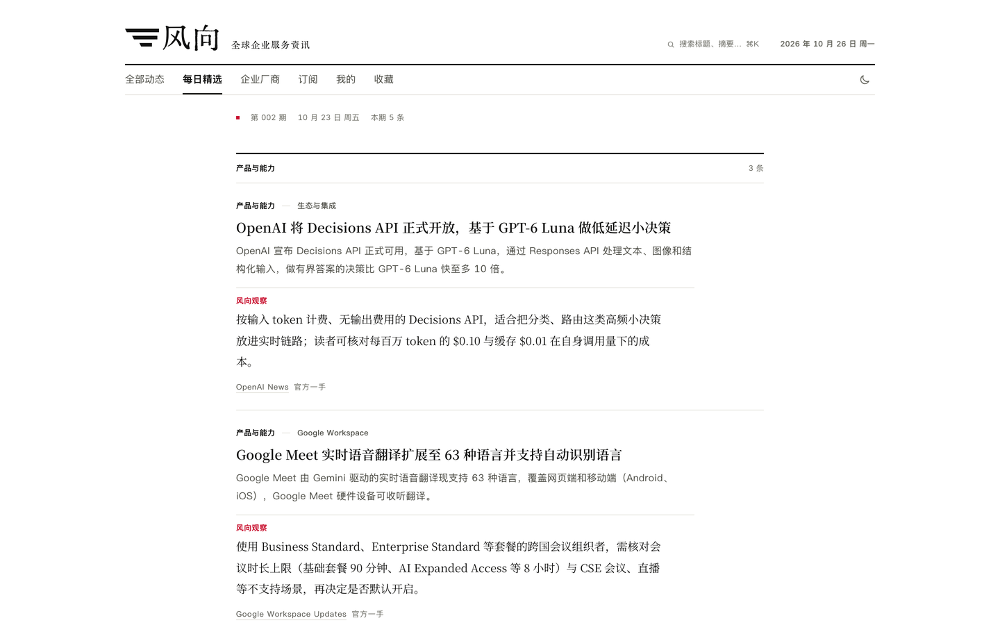
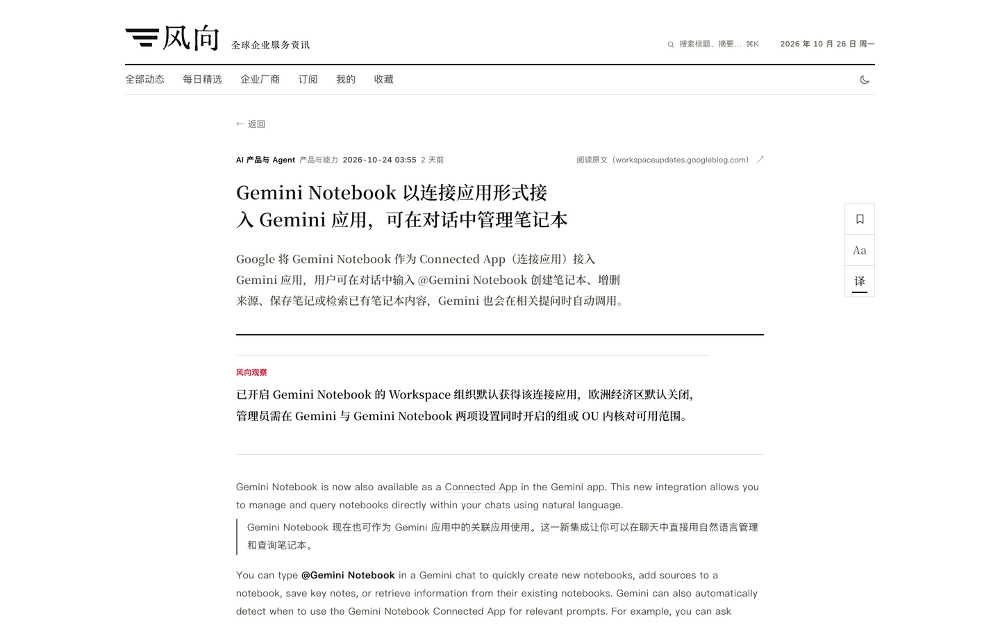
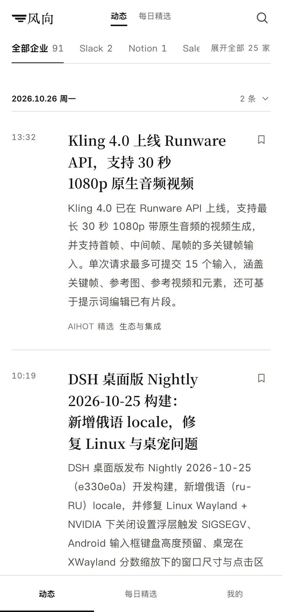
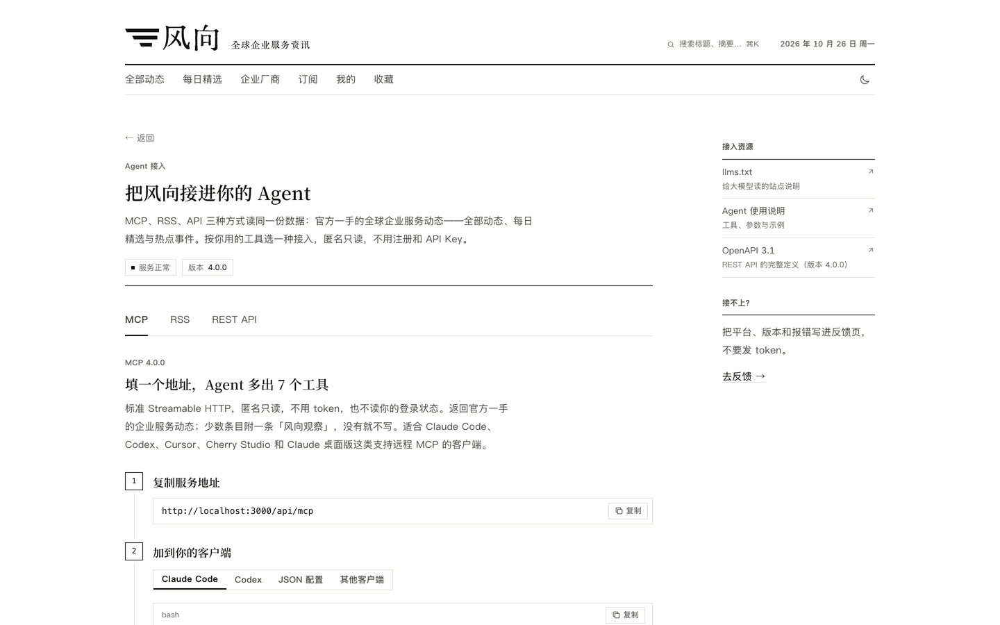

风向 · 全球企业服务资讯
简体中文 | English
可定制的信息聚合平台，适合个人追踪关注主题，也可为企业汇总高价值信息源。
风向关注全球企业服务领域的变化，涵盖 AI 产品、Agent、企业软件、定价调整与市场拓展。它从配置好的信源采集内容，生成中文标题和摘要，按时间汇总展示，并每天编成一期「每日精选」。
你可以直接部署当前版本，也可以更换信源、分类、提示词和品牌，搭建个人关注主题的信息站，或为企业业务汇总所需信息。
在线预览：本 README 的静态镜像；实时采集与接口服务需自行部署。

企业厂商目录汇总各公司的已收录动态，进入公司页可继续查看相关内容；首页也支持按厂商筛选。
内容与阅读
仓库预置了 OpenAI、Google Workspace、Salesforce、Slack 等官方信源。每条动态保留来源与原文链接，便于核对；部分条目附有「风向观察」，提供补充解读。
每日精选

默认每天 08:00（北京时间）出刊，从此前 24 小时的动态中选取少量条目，按栏目编排。当期没有符合精选标准的内容时，页面会明确说明。
中文摘要与原文对照

条目页先展示中文标题、摘要和出处。正文获取成功且允许站内展示时，可在站内阅读；已生成译文的文章支持原文与中文逐段对照。未获取正文或仅展示摘要的条目，提供原文入口。
桌面端提供收藏、字号调整和译文开关；收藏与阅读偏好保存在当前浏览器。
按公司和主题追踪
「企业厂商」目录按公司、行业方向和内容类型组织主题。主题页汇总相关动态，展示介绍、近 30 天收录条数与最近更新。
手机阅读

手机端提供「动态」「每日精选」「我的」三个主要入口，支持深浅色切换与收藏。
订阅与 Agent 接入

网页、RSS、公开 API 和 MCP 共用同一套发布数据。公开读取无需注册或 API Key。
- RSS：在阅读器中订阅动态或每日精选。
- REST API：供程序读取和查询内容，附 OpenAPI 3.1 定义。
- MCP：供支持远程 MCP 的客户端接入，提供最新动态、搜索、热点、事件详情、每日精选，以及周报和月报归档共 7 个工具。
部署后访问 /agent，可查看接入地址、客户端配置和调用示例。
以上截图来自 2026 年 10 月 26 日的本地实例。截图中的内容仅用于展示，不随仓库分发。
搭建个人或企业的资讯站
个人可以持续追踪自己关注的公司、主题或领域；企业可以汇总招投标、销售线索、商机和客户相关信息，形成统一的信息流。可接入的内容取决于信源格式；非标准来源可以通过定制抓取接入。
站点配置与行业配置集中放在以下目录，方便按需调整：
| 想调整的内容 | 配置位置 |
|---|---|
| 站名、介绍、导航和出刊时间 | app/site/site.ts |
| 信源、分类、标签和主题 | app/industry/ |
| 摘要、筛选与翻译等提示词 | app/industry/prompts/ |
| 品牌素材 | app/site/brand/ |
具体步骤见定制指南。运行后也可以在后台管理信源、编辑条目、编排与发布精选，并查看任务、模型用量和操作记录。
快速开始
需要 Node.js 24.11 或更新的 24.x 版本，以及带 Compose 的 Docker。自动生成内容还需要一个兼容 OpenAI API 的模型服务。
1. 获取代码并生成配置
git clone https://github.com/FightKK7/fengxiang.git
cd fengxiang/app
node scripts/init-env.ts
脚本会生成 .env，同时创建随机密钥和管理员密码。
2. 配置模型与运行开关
在 .env 中填写 LLM_API_KEY，并核对 LLM_BASE_URL 与 LLM_MODEL。示例配置使用 DeepSeek，也可按服务商要求更换接口地址和模型。
示例中的 COLLECT_ENABLED 和 MODEL_CALLS_ENABLED 均为 true。填入有效密钥并启动后，后台任务会采集内容并调用模型，费用按模型服务商规则计算。仅调试界面时，将这两项设为 false。
3. 启动服务
docker compose up -d --build
打开 http://localhost:3000，后台位于 /admin，使用 .env 中的 ADMIN_PASSWORD 登录。
首次启动会导入预置信源配置。采集和处理完成后，站点才会陆续出现内容；每日精选按设定时间出刊。新部署不包含截图中的文章与往期内容。
域名、HTTPS、更新与备份等说明见部署文档。
开发与文档
项目使用 Node.js、TypeScript、React Router（服务端渲染）、Fastify、PostgreSQL 17 和 pg-boss，支持 Docker Compose 部署。应用代码位于 app/。
许可与来源
代码采用 MIT 许可证。风向基于 AIHOT 框架二次开发，保留上游版权声明；原始版权与第三方素材说明见 NOTICE。「风向」名称、站点内容和品牌素材不在 MIT 许可范围内。
安全问题的报告方式见 SECURITY.md。